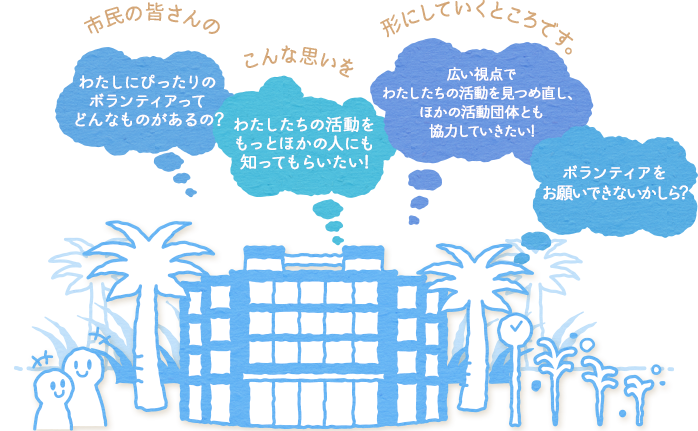

宮崎市民活動センターは市民活動をとおした市民交流の広場です。
ボランティアや市民活動団体、地域活動団体を始めとしたNPOなど、幅広い市民活動を総合的に支援します。
買い物ついでに、仕事帰りに、皆さんのご都合に合わせて
朝9時から、夜10時まで(日曜は夕方6時まで)、いつでもご利用いただけます。
どうぞお気軽においでください。

センターの歴史
2000年8月 宮崎市役所前の宮崎市民プラザ3階に宮崎市が 「宮崎市市民活動支援センター」という名称で 設置しました。
2000年4月 在の名称に改めました。地域や社会のためにできることを考え、伝え、分かち合います。
様々な活動を活かすセンターの7つの機能
- コーディネーション
- ボランティアや市民活動をしたい人(団体)と応援したい人(団体)をつなぎます
- 活動の個別支援
- 会場・備品の提供、機器材の貸し出し、運営相談を行います
- 活動促進の学習・研修
- 各種講座や意見交換会で相互に学び合う機会を企画します
- ネットワーク
- 市民・市民活動団体・企業・行政のネットワークを築きます
- 情報センター
- 情報誌やホームページにより情報発信・収集します
- データ統計
- ボランティア登録・市民活動団体登録をとおして市民活動のデータを集積します
- 災害ボランティアセンター
- 災害時の被災地と救援・復興ボランティアをつなぐ拠点となります
コーディネーターの役割
- つなぐ
- ボランティア活動を求める人と、ボランティア活動を希望する人の活動条件等を調整しながら、両者の思いをつなげていきます。
- 支える
- ボランティアの不安や悩みを聞いて、相談・援助をし、市民活動団体の活動を支えます。
- 育てる
- 専門的な知識や技能について研修を行い、人材の育成に努めます。
- 情報を集める・知らせる
- 社会貢献が関わる市民活動団体、施設、学校、企業の情報や、ボランティアのニーズを集めます。
アクセス
住所: 〒880-0001 宮崎市橘通西1丁目1番2号 宮崎市民プラザ3階マップ
TEL: (0985) 20-8777 FAX : (0985) 20-8411
利用時間: 午前9時～午後10時 (日曜は午後6時閉館)
休館日: 12月29日～1月3日および市民プラザ保守点検日等
最寄り駅 ：宮崎駅(徒歩約25分)
最寄りバス停：橘通一丁目(徒歩約5分)
※毎週月曜日は市民プラザの休館日となっていますが、宮崎市民活動センターは開館してます。
※市民プラザ休館日は、南玄関からお入りください。
※車でお越しの際は地下駐車場、もしくは松橋駐車場をご利用ください。駐車スペースに限りがありますので、できるだけ公共交通機関をご利用ください。